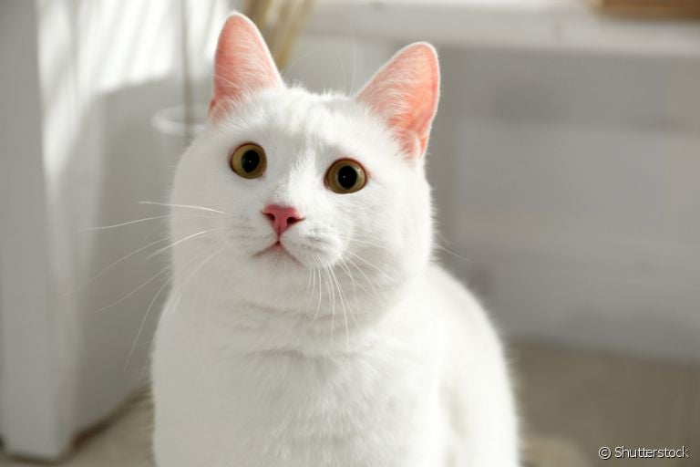
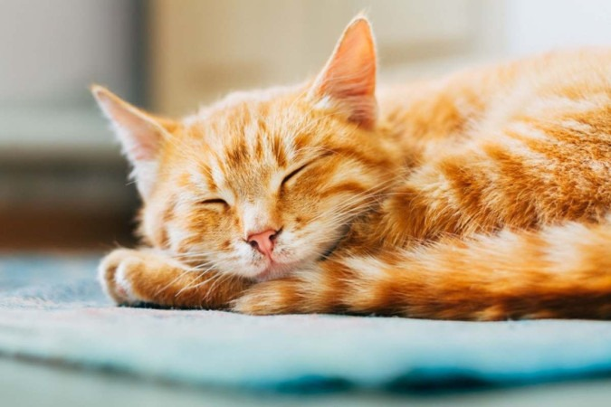
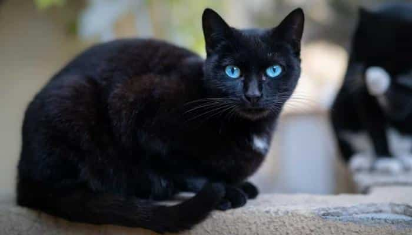

Gato Branco

Os gatos brancos são sem dúvida aqueles que têm uma personalidade mais complexa e difícil de compreender. Costuma demorar mais tempo e o tutor deve ter paciência para estabelecer uma relação, pois costumam ser muito desconfiados, mas uma vez que esta se forma a amizade, é para sempre.
Tirando com os seus familiares, o gato branco geralmente é o mais tímido, distante e por vezes agressivo. Costuma aproveitar qualquer circunstância para lançar o seu golpe. No entanto, e como já foi dito, ele é muito fiel com quem tem a sua confiança.
Gato Cinza
Os gatos cinza geralmente apresentam uma postura travessa, divertida e carinhosa. São muito lindos e apresentam um pouco de todas as personalidades. É um gato fantástico que se deixa manipular e acariciar, sem perder a sua natureza felina. Devido a sua curiosidade e seu jeito brincalhão de ser, ele geralmente é descrito por seus tutores como gatos de atitude.
Gato Laranja

Analisando a personalidade dos gatos segundo a sua cor, é possível concluir que o gato laranja é especialmente doce, sendo considerado carismático, pois mia em busca de afeto, carinhos e palavras afetuosas. Esses gatos adoram se esfregar no tutor e receber carinhos. O gato laranja também é conhecido por ser o felino mais simpático com todos entre todas as cores de gato de existentes, por sua ótima recepção ao ser acariciado. No entanto, no começo costumam ser tímidos como qualquer recém chegado, não é mesmo?
Gatos Bicolor
O gato bicolor costuma ter uma personalidade estável e distante. Podem ser muito carinhosos e em seguida fugir quando você tenta tocá-los. Esta peculiaridade da sua personalidade faz com que eles sejam extremamente curiosos e surpreendentes.
Gatos Pretos

Sabemos que os gatos pretos culturalmente estão associados a má sorte, como consequência da sua perseguição na Idade Média. No entanto, em outras culturas, o gato preto recebe um tratamento muito mais favorável. A verdade é que o gato preto apresenta uma maior predisposição a ter uma personalidade tranquila, tímida e, ao mesmo tempo, muito carinhosa. Se você um dia adotar um gato preto, vai poder confirmar que ele tem algo de especial e único, uma personalidade até mais sensível que a dos outros gatos.
Gatos Carey

Os gatos carey tem uma história bonita, mitológica e sobrenatural. É possível que por este motivo, sejam gatos de personalidade variável. No entanto, um gato carey é o amigo mais fiel que pode existir.
Costumam ser gatos tímidos e distantes com os estranhos, mas uma vez que exista um vínculo forte, o gato carey demonstra todo o seu afeto ao melhor estilo felino, com mordidas e pequenos arranhões.